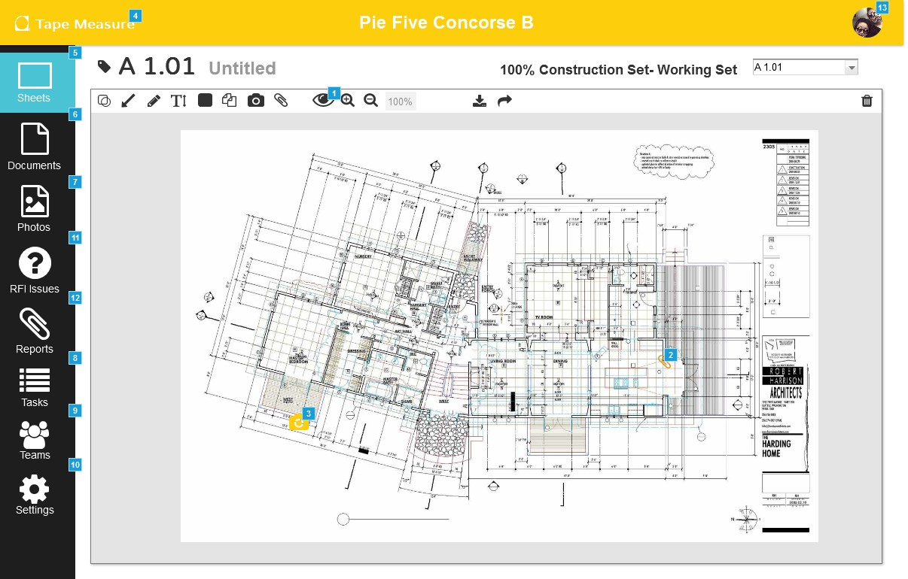
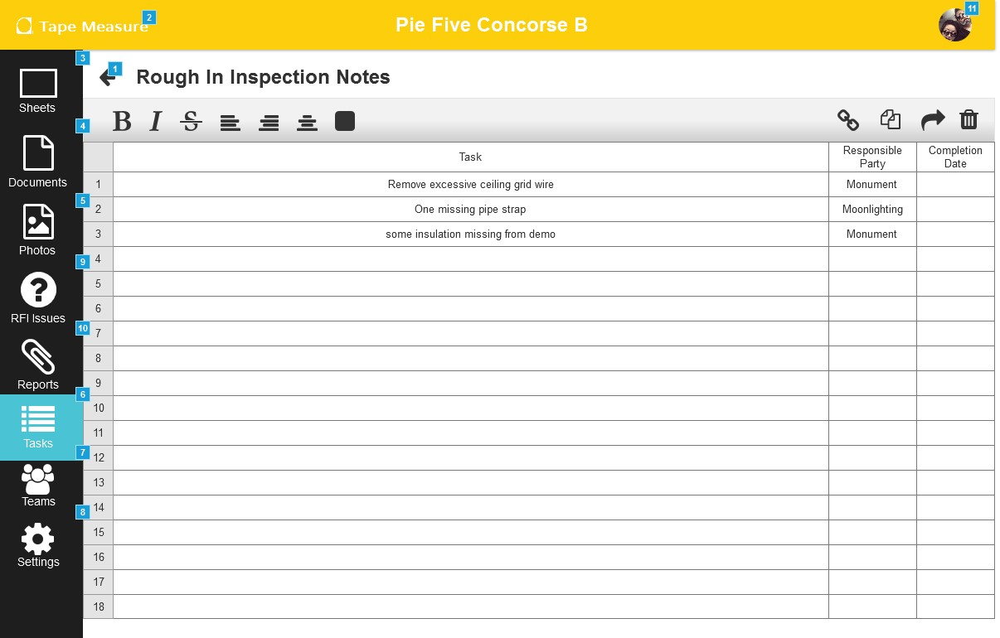
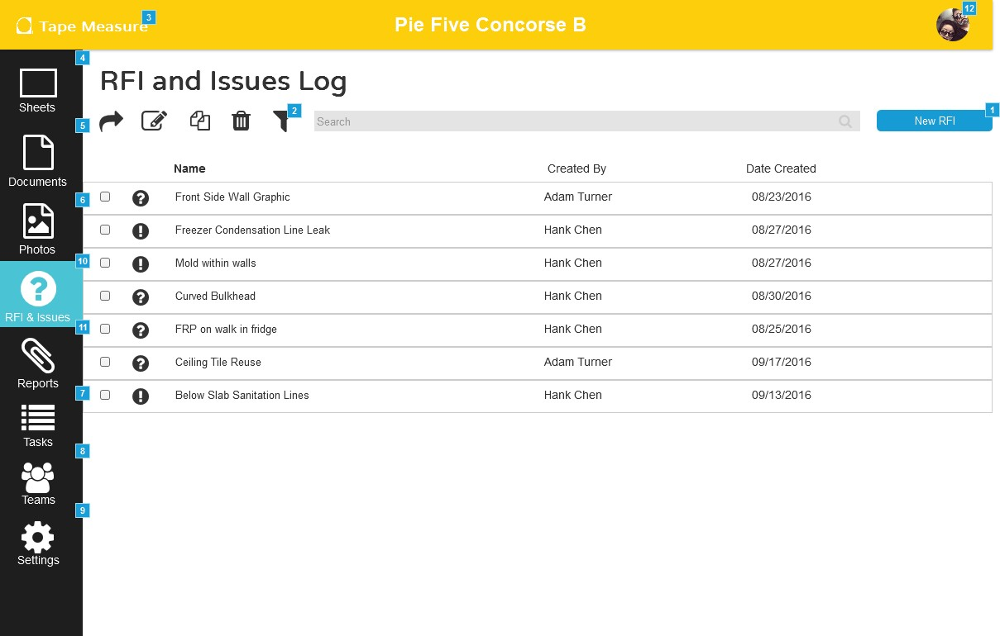
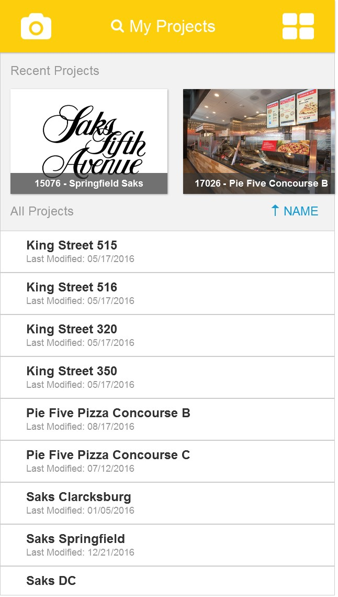
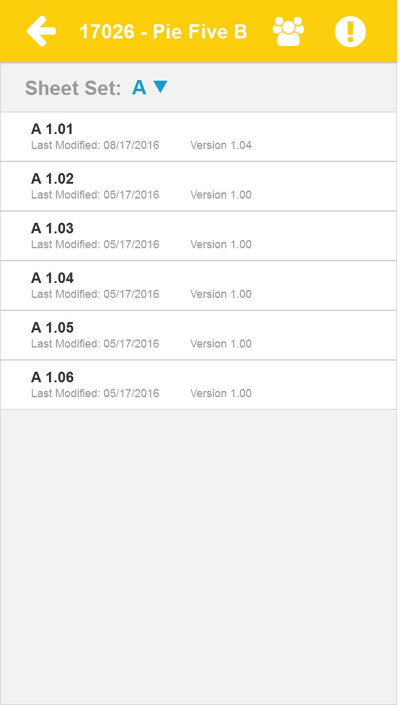
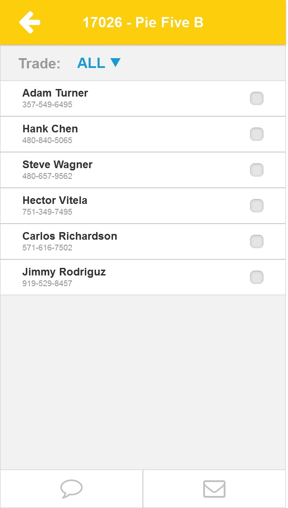
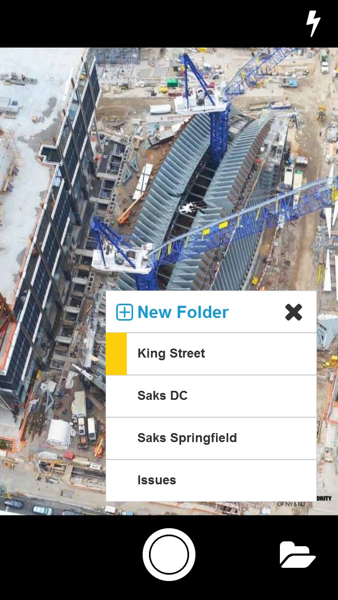
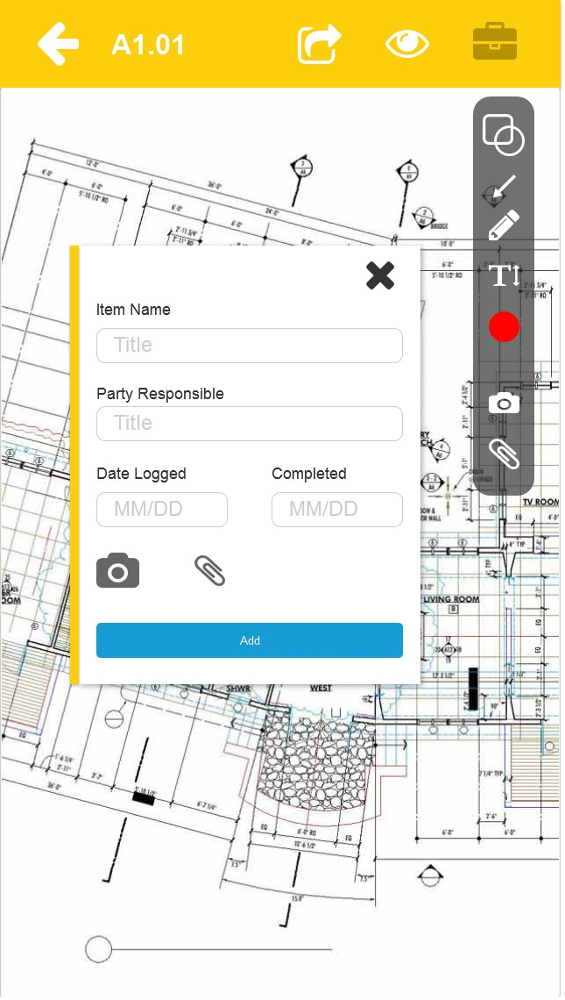

Description
Tape measure is a personal project while learning to use Axure RP 8. During my construction career as an onsite superintendent at a small firm in Fairfax, VA, I found that many of the traditional construction management tasks can be more efficiently performed with the use of technology. I came up with an idea of a platform that allows superintendents to communicate on site situations to project managers, architects and clients faster so they can respond to the site needs faster. Of course someone else in the world had already beat me to it with many similar functions that I had in mind. The biggest gap that I see in each individual application is focused towards certain aspects of construction management. I decided that I will try to come up with something that encompasses all the important features of each application as I saw needed when I was in the construction trade.
Logo
If I had to find the one thing that every single person on the site uses the most despite of their trade, it would be the tape measure. Certainly one could argue that a construction hat, pencil, the drawings are some other day to day objects that cannot be disregarded on a construction site, but the tape measure itself intrinsically not only speaks of construction, but also a language of organization which is what this application aims to help with.
Branding
Without a second thought, I went straight through a bright yellow for the main color centered it with a high contrast of blue. I don't think there is any other color that speaks better of modern construction than the bright neon yellow. It is not only meant for users to distinguish it as construction object, but also screaming safety at the people working on the site. I tried to use larger font-sizes and icons throughout the application as most superintendents on site are not some 30 year olds with close to perfect vision. Most of the onsite superintendents are actually closer to 40+ with limited experience with technology and far sighted.

Research
After discovering that there were multiple similar application already in the market, my first reaction was to conduct a SWOT analysis of the other applications. As mentioned earlier, the analysis' conclusion was that no application was completely comprehensive and the one app that had the closest vision to mine was PlanGrid. The user stories were then conducted by talking to a couple old colleagues and my personal experience.

Fidelity Design
As with all my previous projects, I started the design process using pen and paper to jot down quick ideas of branding and the most important parts of the interface. Then I fixed them into place with the newly learned Axure RP 8.
The overall layout of the application was rather simple as most pages relies on the same format. The hard part was to figure out the details and specific features that goes into each specific page. Considering that this will be a web application and not a standalone app, the top navigation with the primary color was needed to allow the user to distinguish it from other sites instantaneously along with some minor functions. The traditional left bar is then added to provide the main navigation of the application.
The most intensive pages are those that basically has an app within an app. The drawing page, for example, basically requires a set of language with in the pdf viewer that needs to reside in the overall layout of the application. The tasks spreadsheet were of similar concept.
  Mobile Interface
I originally designed Tape Measure for stationary use because most of the superintendents that I have met are more fluent with desktops than their mobile devices. It is also harder for most of them to focus on a mobile device for a long period of time due to physical limitations. I also would like to push the users towards the desktop/tablet application simply because it is much more efficient to work on a device with a keyboard and a mouse than a mobile device and efficiency was the problem that Tape Measure is trying to solve from the beginning.
With that said, I broke down what Tape Measure, as a mobile app, is and compared it to other mobile apps that have a desktop version. Asking questions like why would I need a mobile, what can the user achieve for having a mobile version. The answer to my questions for many apps is the ability to access something anytime anywhere. In other words, convenience or mobility. But my goal for tape measure was to improve efficiency not to log a daily report or adding a team member to the project on my phone because I don’t have my laptop at hand and those tasks would be better done on a stationary.
 So I looked at apps that would be obsolete with the mobility element removed. Apps like maps, flashlight, and camera. And then I understood that the mobile version should be an extension of the stationary. A device where its main purpose is to instantly sync information during site walks to the project and access some information from the project. In a way, it's a social media tool for the project’s online profile. All in all, it should be an extension with limited functions not only because it will simplify the interface, I also hope it would drive people to use the stationary more instead of spending time navigating around the phone’s small interface.
 